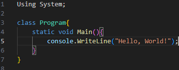

마이크로소프트가 개발한 다목적 프로그래밍 언어로, 주로 .NET 프레임워크와 함께 사용되며 다양한 응용 프로그램을 개발할 수 있음
장점 1. C#은 객체 지향 프로그래밍을 지원하여 코드 재사용성과 유지보수성이 뛰어남
장점 2. C#은 강력한 타입 시스템을 갖추고 있어 개발 과정에서 오류를 줄일 수 있음
장점 3. C#은 가비지 컬렉션을 지원하여 메모리 관리를 자동으로 처리함
장점 4. C#은 다양한 라이브러리와 프레임워크를 제공하여 생산성을 높임
단점 1. C#은 NET 프레임워크에 의존적이어서 운영체제와 플랫폼에 대한 종속성이 있을 수 있음
단점 2. C#은 상대적으로 무거운 실행 파일을 생성할 수 있음
데스크탑 애플리케이션
웹 애플리케이션
모바일 애플리케이션
게임 개발
클라우드 서비스
데이터베이스 어플리케이션
인공지능 및 머신러닝
사물 인터넷 (IoT) 어플리케이션
